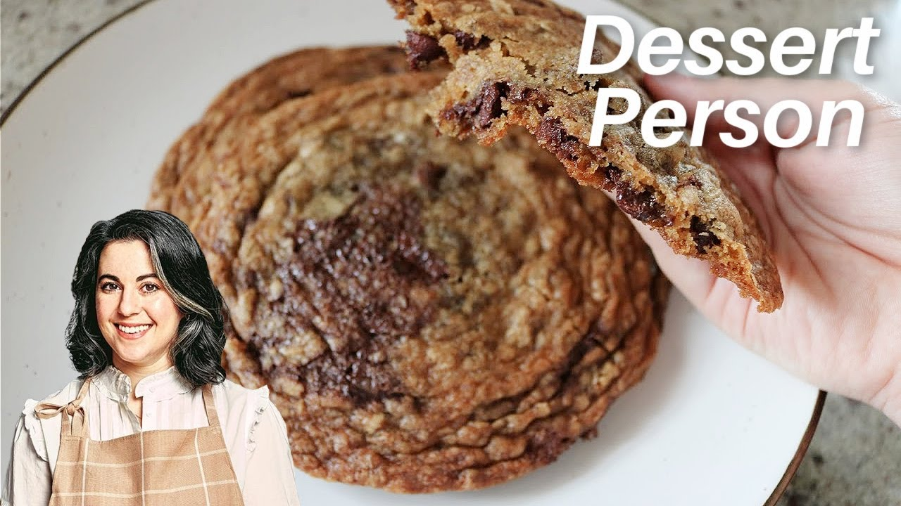

Brown Butter Cookies

Description
If you love Bon Appetit and you love Claire Saffitz, then you will love these cookies.
These feature browned butter which gives a rich, butterscotch-y flavor to the beloved
chocolate chip cookie. Additionally, Claire pays fine attention to the mouthfeel and
experience of eating a cookie by balancing the mixture of white and brown sugar, as well
as the mixture of dark and bittersweet chocolate and even the shape of the chocolate. This
precision and attention from Claire makes these the best homemade cookies ever.
Ingredients
- 2 sticks unsalted butter (8 oz/ 227 g), cut into tablespoons
- 2 tablespoons heavy cream, half and half, or whole milk (1 oz/ 28 g)
- 2 cups all-purpose flour (9.2 oz/ 260 g)
- 2 teaspoons Diamons Crystal kosher salt (0.22 oz/ 6g)
- 1 teaspoon baking soda (0.21 oz/ 6g)
- 3/4 cup packed dark brown sugar (5.3 oz/ 150g)
- 3/4 cup granulated sugar (5.3 oz/ 150g)
- 2 large eggs (3.5 oz/100g), cold from the refrigerator
- 1 tablespoon vanilla extract
- 5 ounces (142g) bittersweet chocolate disks, half coarsely chopped
- 5 ounces (142g) milk chocolate disks, half coarsely chopped
Steps
- Brown the butter: Measure out 4 ounces (113g) of the butter and set aside in a large bowl. In a small saucepan, cook the remaining 4 ounces (113g) butter over medium-low heat, stirring frequently, until the butter comes to a boil. Continue to cook, scraping the bottom and sides of the pan constantly with a heatproof spatula, until the butter sputters, foams, and eventually you see browned bits floating about, 5 to 7 minutes. Add the browned butter to the bowl with the other butter, making sure you scrape in all of the browned bits, then add the heavy cream (no need to stir). Set aside to cool.
- Mix the dry ingredients: In a medium bowl, whisk together the flour, salt, and baking soda to combine. Set it aside.
- Mix the batter: To the bowl with the browned butter mixture (it can be slightly warm, just make sure its not hot), add the brown and granulated sugars and whisk vigorously until the mixture is very smooth and thick, about 45 seconds (since we're not going for a light and and cakey cookie texture, you dont need a mixture thats light and fluffy). Add the eggs and vanilla and whisk until the mixture is satiny, about 45 seconds. Add the flour mixture and whisk until the batter is smooth and well combined. It will look a little loose -- this is normal. Switch to a flexible spatula to scrape down the bowl, folding to make sure everything is well incorporated. Add both the chocolates (whole disks and chopped) and mix to combine. Set the batter aside for 5 minutes to firm up slightly.
- Scoop and chill the dough: Using a 2-ounce scoop or 1/4 cup measure, scoop level portions of the dough and place on parchment-lined baking sheet as close together as possible (you'll space them out before baking). Cover the sheet tightly with plastic wrap and refigerate for at least 12 hours and up to 48 (if you're pressed for time, a couple of hours in the refrigerator will do-- just note the baked cookies wont be as chewy or wrinkly-looking).
- Preheat the oven and prepare the pans: When you're ready to bake, arrange two oven racks in the upper and lower thirds of the oven and preheat to 350F. Line two rimmed baking sheets with parchment paper.
- Bake the first bath of cookies: Place 6 pieces of chilled cookie dough on each of the prepared baking sheets, spacing them so they're at least 3 inches apart. Bake the cookies on the upper and lower racks until they are dark golden brown around the edges, 18 to 22 minutes. Allow the cookies to rest for 5 minutes on the baking sheets, then use a metal spatula to transfer the cookies to a wire rack to cool.